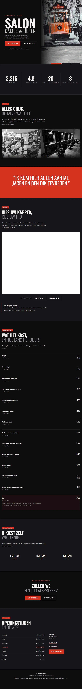
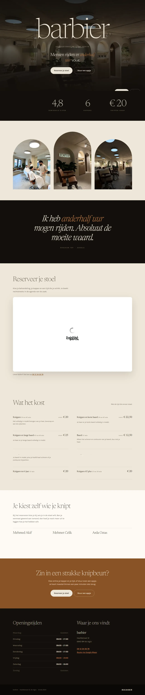
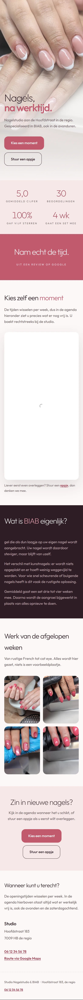

Basis
€795eenmalig, vanaf
Tot vijf pagina's, responsive, contactformulier, technische SEO-basis, één correctieronde.
Gebouwd om bezoekers om te zetten in aanvragen en afspraken, en gecontroleerd tot de laatste pagina.

Van idee naar ervaring
Geen vaste mal voor elk bedrijf. Deze websiteconcepten laten zien hoe sfeer, inhoud en een duidelijke vervolgstap samenkomen.


Ontwerpvoorbeelden, geen klantresultaten. Bekijk de toelichting bij ons werk.
Een website van Capital BB is geen digitale folder maar een leadmachine: een op maat gebouwde site die bezoekers naar één duidelijke actie leidt en die actie doorgeeft aan de rest van uw systeem. Prijzen lopen van €795 voor een compacte site tot vanaf €4.945 voor maatwerk met eigen functionaliteit, eenmalig en exclusief btw.
De meeste bedrijfssites vertellen wie het bedrijf is en stoppen daar. Er staat geen duidelijke volgende stap, het formulier komt in een postvak dat niemand structureel bijhoudt, en op een telefoon valt de helft weg. Bezoekers die klaar waren om te bellen, klikken weg.
Elke pagina heeft een doel en eindigt in de stap die daarbij hoort: bellen, appen, een formulier of een afspraak in de agenda. Geen pagina loopt dood.
Geen thema met uw logo erin. Kleur, typografie en opbouw komen uit uw vak en uw positie, en wijken bewust af van wat uw concurrenten doen.
Semantische HTML, unieke titels en beschrijvingen, canonicals, structured data en een sitemap. De inhoud staat in de HTML, niet pas na het laden van JavaScript.
Het formulier kan doorgezet worden naar een CRM, naar WhatsApp, naar uw agenda of naar een AI-medewerker die de eerste vragen alvast afhandelt.
Elke site, ook de kleinste, wordt gecontroleerd op mobiel gedrag, contrast, laadgewicht en vindbaarheid voordat hij live gaat. Alle bedragen eenmalig en exclusief btw.
€795eenmalig, vanaf
Tot vijf pagina's, responsive, contactformulier, technische SEO-basis, één correctieronde.
€1.595eenmalig, vanaf
Tot tien pagina's, maatwerk in homepage en secties, conversiegerichte opbouw, lokale SEO-basis, analytics, twee correctierondes.
€2.995eenmalig, vanaf
Tot vijftien pagina's, uitgesproken maatwerkdesign, merkverhaal, geavanceerdere interacties, drie correctierondes.
€4.945eenmalig, vanaf
Eigen functionaliteit, koppelingen en een ontwerp dat nergens anders staat.
Betaling in drie delen: 40% bij opdracht, 40% na goedkeuring van het ontwerp en 20% voor livegang.
Een site die niemand bijhoudt, veroudert. Drie niveaus, per maand, exclusief btw. Onderhoud is een keuze, geen voorwaarde.
€25per maand
Hosting, monitoring, beveiliging, back-ups en updates.
€59per maand
Alles uit Hosting en techniek, plus kleine wijzigingen.
€149per maand
Alles uit Onderhoud, plus maandelijkse verbetering en prioriteit.
De prijs volgt de omvang en de mate van maatwerk, niet het gesprek. Basis €795 tot vijf pagina's, Premium €1.595 tot tien pagina's met conversiegerichte opbouw, Signature €2.995 tot vijftien pagina's met uitgesproken maatwerkdesign, en maatwerk vanaf €4.945 zodra er eigen functionaliteit of koppelingen bij komen. Alles eenmalig en exclusief btw. Koppelingen worden apart geprijsd, vanaf €295 voor een eenvoudige koppeling.
| Aanpak | Wat dat in de praktijk betekent |
|---|---|
| Zelf bouwen in een websitebouwer | Goedkoop en snel, maar u bent zelf de bouwer, de tekstschrijver en de beheerder. Techniek en vindbaarheid blijven meestal liggen, en koppelen met uw eigen systemen kan vaak niet. |
| Een thema of template laten invullen | Ziet er verzorgd uit, maar staat er bij tientallen anderen ook. De opbouw volgt het thema in plaats van uw verkoopverhaal, en overbodige code vertraagt de site. |
| Een website van Capital BB | Op maat gebouwd rond uw aanvraagroute, met techniek die leesbaar is voor zoekmachines en AI-systemen, en klaar om aan CRM, telefonie en automatisering gekoppeld te worden. |
U mag verwachten dat de site snel is, op elke telefoon werkt, indexeerbaar is, dat elke pagina een duidelijke volgende stap heeft en dat aanvragen aankomen waar u ze wilt hebben. Wat wij niet beloven: een vast aantal aanvragen of een vaste plek in Google. Hoeveel er binnenkomt hangt ook af van uw markt, uw prijs en uw bereik.
Voorbeelden van wat er in zo'n bedrijf speelt. Capital BB werkt niet alleen voor deze branches, en dit zijn geen klantnamen of gerealiseerde resultaten.
Vertrouwen en onafhankelijkheid moeten meteen zichtbaar zijn, met tarieven, werkwijze en een gespreksaanvraag in plaats van een offerteknop.
Het aanbod verandert wekelijks; de site moet voorraad kunnen tonen en proefrit- of bezichtigingsaanvragen opvangen.
Bijna al het verkeer is mobiel en de belangrijkste knop is 'afspraak maken', gekoppeld aan het boekingssysteem dat de zaak al gebruikt.
Werk spreekt voor zich: foto's van uitgevoerd werk, werkgebied, en een aanvraagformulier dat genoeg vraagt om te kunnen inschatten.
Openingstijden, kaart en reserveren moeten binnen één scroll te vinden zijn, ook als iemand voor de deur staat.
Direct naar een specifieke vraag: Websites voor salons · Website laten vernieuwen · Website laten maken · Website voor startende ondernemers
Een website kost eenmalig vanaf €795 exclusief btw voor het Basis-pakket tot vijf pagina's. Premium is vanaf €1.595 tot tien pagina's, Signature vanaf €2.995 tot vijftien pagina's, en maatwerk met eigen functionaliteit en koppelingen begint bij €4.945. Wat u kiest bepaalt de prijs; het gesprek doet dat niet.
Dat hangt af van het pakket en vooral van hoe snel teksten, beelden en feedback beschikbaar zijn. U ziet eerst een werkend voorstel, en na uw akkoord volgt de volledige bouw. Wij geven een doorlooptijd af zodra duidelijk is wat er gebouwd wordt, in plaats van vooraf een termijn te noemen die van uw aanlevering afhangt.
Ja. De structuur maken wij altijd: welke pagina's er komen, wat er op elke pagina moet gebeuren en waar de aanvraag valt. Teksten schrijven wij op basis van wat u vertelt, en u leest ze na voordat ze live gaan. Wij verzinnen geen claims die u niet kunt waarmaken.
Ja. Denk aan een boekingssysteem zoals Salonized, Knipklok, Altegio of Afspraakpro, aan een agenda, aan WhatsApp Business, of aan een CRM waarin de aanvraag als lead landt. Een eenvoudige koppeling begint bij €295, een standaard API-koppeling bij €650 en een complexe koppeling bij €1.250, exclusief btw.
Ja. U blijft eigenaar van uw domein, uw teksten, uw beeldmateriaal en uw gegevens. Onderhoud is geen voorwaarde om de site te mogen houden.
Soms wel. Als de basis technisch in orde is, is verbeteren goedkoper dan opnieuw bouwen. De Website Performance Scan is bedoeld om precies dat vast te stellen: wat werkt, wat kan blijven, en wat vervangen moet worden. Als opnieuw bouwen niet nodig is, zeggen wij dat.
Nee. Hosting en techniek kost €25 per maand voor hosting, monitoring, beveiliging, back-ups en updates. Onderhoud kost €59 per maand met kleine wijzigingen erbij. Actieve groei kost €149 per maand met maandelijkse verbetering en voorrang. Zonder onderhoud blijft de site van u; het bijhouden ervan wordt dan uw eigen verantwoordelijkheid.
Grenst hieraan: gevonden worden, de kosteloze scan of een CRM erachter.
Vertel wat u verkoopt en aan wie. Wij laten zien welke opzet daarbij past, wat er gekoppeld kan worden en wat dat ongeveer kost.
Liever direct? Stuur een WhatsApp of bel 06 14664161